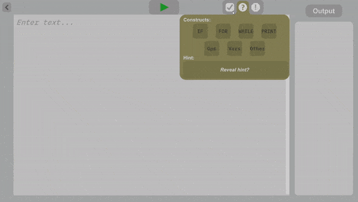
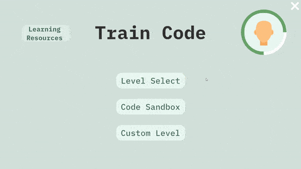
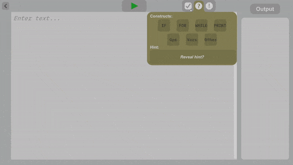
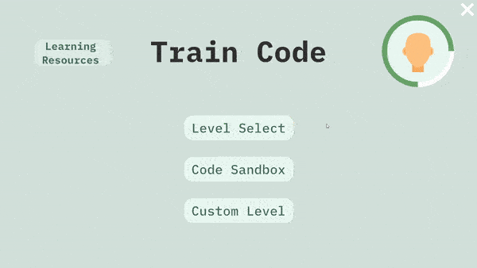
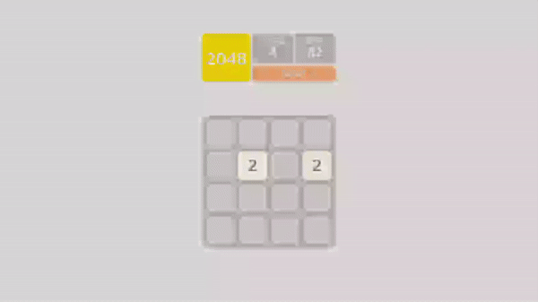
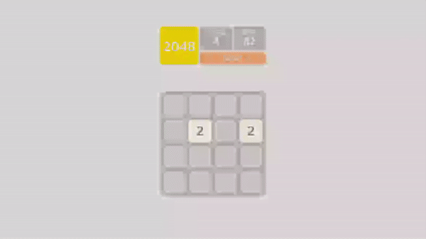
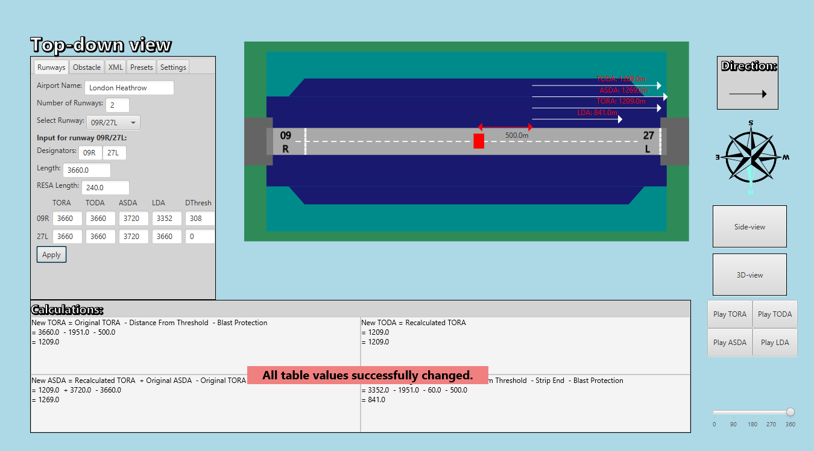
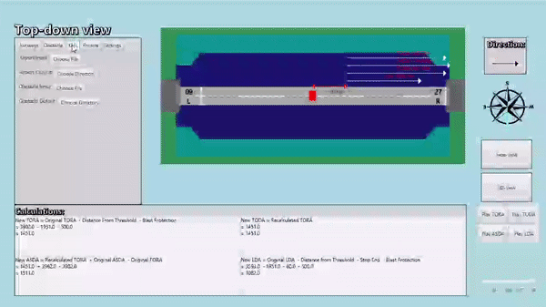
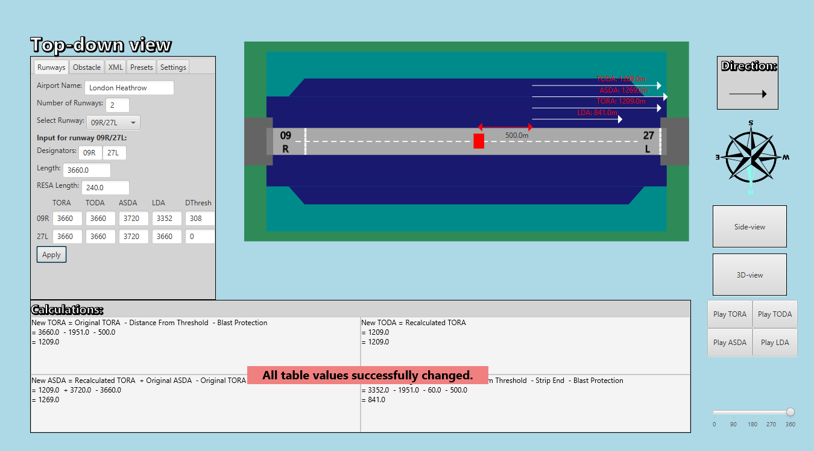
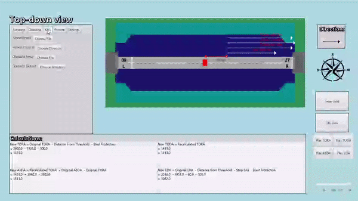

Game Programmer
An application developed for my thesis titled: "Improving learning to program for noncomputer science undergraduates by creating a gamified application".
This includes two sets of levels with tasks that involve two custom programming languages of varying abstraction, with parsers built from scratch. They are meant to introduce programming language constructs to the learner and ease the transition to established languages. Each level provides feedback to help the learner find solutions themselves.
The first language takes the form of visual train tracks and stops that the user drags together to create a complete track program. The program executes visually as the train follows the track and variables are shown changing when stops are visited. This helps the learner understand program flow and debug their solutions.
The second language resembles pseudocode but with explicit variable assignment and modification. The code is written like a formal language to act as a stepping stone to traditional coding.
All ideas and assets for the program were my own, with the exception of the lexer generator, font, file browser, and some images.
Main features:
Technologies/Techniques used:
Custom error messages
Train-track language
Tain level execution
 



Level selection
Supported constructs
User personalisation
A guitar hero clone that allows playing of community-made song charts, taking input from a keyboard or my Arduino-modified guitar controller.
My ps3 Guitar Hero controller stopped working so I used an arduino UNO to read voltages directly from the buttons, and made this guitar hero clone to take those inputs and allow me to play community-charted songs.
Main features:
Technologies/Techniques used:

Song Selection
Gameplay with video background
Star-Power activated
Arduino modified controller
(2025) Standalone synthesiser with dual oscillators, modulation, biquad filter, and polyphony. Written in C++ using XAudio2 API and QT GUI framework.
Both oscillators can modulate each other and can be combined, and up to 8 notes can be played simultaneously.
Main features:
Technologies/Techniques used:
Frequency modulation
Ring modulation
Adjusting quantize amount
1st place winner of streamer Nymn's $3000 gamejam.
Solo developed over 2 months involving 3d modelling, image editing, audio design, music production, programming, and testing.
Set in the streamer's house and based on the exit-like genre, the gameplay involves exploring the house each day and sending sms messsages describing the events that occur. The events become more unsettling each day, culminating in a final jumpscare.
Examples of the events are hearing footsteps coming up the driveway, or the TV turning on by itself and showing a news report of a recent prison escapee in the area.
Main features:
Technologies/Techniques used:
Interactive desktop
Streamer playing the game
Walking through the house
This was a 2 person project - my partner focussed on level design and environment texture creation, while my responsibilities included unity implementation and other asset creation. This game was made as part of coursework for the module 'Games Design and Development' - The only requirements were a tutorial level and a core dynamic.
It features a tutorial level without instructions so that the player discovers mechanics for themselves, and a main level that consists of a linear prison map with each door requiring a puzzle solution to open and progress.
There are 3 types of puzzles: a lockpicking puzzle, a keypad puzzle, and a combination lock puzzle - the latter two have solutions hidden in the level for the player to find and solve.
The puzzle scripts are written with variable difficulty as a focus and have variables assignable outside the scripts, so puzzle solutions can be changed quickly and easily, and level development is sped up as a result.
All assets for the game were made by myself with the exception of the font, pixel shader, some sound effects, and some images.
Technologies/Techniques used:


Text narration system
Player movement
Running away from an enemy


Lockpicking puzzle
Keypad puzzle
Combination puzzle
This game was my A-Level CS project, for which there were no prompts, and which got an A*.
It features a tutorial that explains the game mechanics and highlights each area of interest in yellow as its are talked about. It also has a main gamemode where the player can gain gold overtime, spend gold on units, move units around by picking them up, and move units into the infirmary to heal them.
The main feature of the game is the ability to physically pick units up using the VR headset's controllers, which makes the game more immersive. The player plays against an NPC who plays moves that depend on the current state of the game; e.g places units in defence when their base is under attack
All assets for the game were made by myself with the exception of the font, the units' body model (but not helmet), and some ground textures.
Technologies/Techniques used:


Selecting and placing units
Units fighting and dying
Player's base is destroyed


Moving unit into infirmary
Tutorial with highlighting
Enemy's base is destroyed
Multi-ruleset solitaire made to learn Unreal Engine.
Technologies/Techniques used:

New Game Menu
Card dragging and stacking
Autocomplete
Tech demo of deformable meshes using Unreal Engine 5's geometry script and the marching cubes algorithm.
Main features:
Technologies/Techniques used:
Digging terrain
Adding and removing to mesh
Generated collision primitives
The competition was open to the whole school and the prompt was 'creatures'. This won the competition and the school said, about the project:
"This year’s overall winner, James (Fifth Year), created something truly exceptional, building a game using Virtual Reality. The planning, but more significantly, the genuinely immersive experience would not have been out of place next to some of the professional games found online".The aim of the game is to make burgers based off random orders that come in, if the player misses 3 orders the game ends. There is a burger making station, oven, and a chip fryer station.
The theme of the game is 'monsters' so the burger fillings include spiders and eyes, and if you lose a monster eats you to end the game.
All assets for the game were made by myself with the exception of the font, some sound effects, and two textures.
Technologies/Techniques used:
(Demonstration videos use MNK but gameplay is room-space VR)


Failing 3 orders and losing
New random orders sliding in
Serving/Binning burgers


Interaction with frying station
Menu metaball background
Missing an order + interactables
A clone of the game 2048 made for fun and to learn android app development - as with the real game, the aim is to combine numbers by swiping until the number 2048 is reached. The game can be reset and two random start positions are chosen, and the game keeps track of the highest achieved score. The player loses if they swipe in a direction where no blocks can move.
Blocks are kept track of using coordinate-based object names, and when combining their position and colour lerps to their target values smoothly.
One particular challenge was preventing empty spaces being left if all blocks move at the same time - my solution was to handle block movement column-by-column starting from the target direction, this resulted in no gaps being left.
All assets for the game were made by myself with the exception of the font.
Technologies/Techniques used:
 


Running out of moves; losing
Swiping and block combining
Game resetting and start randomisation
This project was for fun to try and recreate the waveforms seen in DJ software, and to experiment more with audio processing and OpenGL.
The script takes an existing audio file and analyses its amplitude and frequency over time. The frequency is represented by the colours - red is low and blue is high.
As the audio is played, the waveform scrolls along to match it, and can be zoomed to see more/less detail.
Technologies/Techniques used:

Zoomed in scrolling waveform
Paused view
Zooming in/out of waveform
This project was developed in IntelliJ using git for version management, and GitLab as the repository storage server.
This tool allows an ATC worker to recalculate runway lengths and boundries given an obstacle on the runway. It has 5 tabs for runway/obstacle data entry, XML state saving, preset selection, and settings. The lower panel displays the calculation equations and results, the runway is visualised in the center with 3 views (top down/side on/3D), and buttons on the right allow view selection and TTS.
This project involved Agile development consisting of 5 sprints - each sprint I helped produce planning documents, implemented my assigned features, and assisted others with their features and bugs they couldn't fix.
Team work and soft skills were an important part of this project; at one point in development an argument started between 2 members of the team over implementation of a feature - I helped mediate the argument and got the members to find a comprimise so that the project was not impacted.
For a sprint I was the sprint leader, meaning I was in charge of planning the sprint, ensuring work was completed, specifying how new components in the MVC model would interact, and demonstrating/presenting the tool at the end of the sprint in a stakeholder meeting.
Features I was solely responsible for were: XML importing/exporting, the left panel with tabs/value entries/presets, the 3D runway view, the notification system, runway flipping, among others.
Technologies/Techniques I specifically used:
 



Direction, side/3D view, and rotate features
UI showing runway with values in middle
Preset selection + colour blindness modes